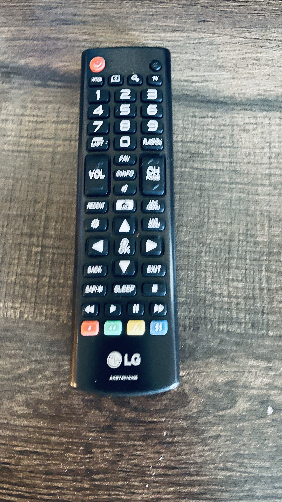

Test Image -

Output on GOOGLE LENS -
Remote Control
Output on Mobilenet Model -
Remote Control
Result - Mobilenet Model and Google Lens are both more accurate
Out of the 5 images I have tested, GOOGLE LENS has predicted 4 of them correctly and MOBILENET has predicted 2 of them correctly. According to this case study, GOOGLE LENS is the more accurate of the two.